stop 1 of 8morning
films
A documentary about our first year out here. It follows the whole process of getting the land. Episode 1 is from before we bought it.
newest · season 1 · episode 4 · hunting for a lost well.

thanks for watching
the same old cycle.
A creative outlet: films from the land, homesteading, jewelry, beading patterns, recipes, and whatever comes next. We're Chad and Daniel, a couple who'd never homesteaded a day in our lives, learning it on 34 acres in Central New York.
scroll to walk the landthe land, stop by stop skip the walkskip to the rest this is the still version, because your device asks for less motion. show the moving one
stop 1 of 8morning
A documentary about our first year out here. It follows the whole process of getting the land. Episode 1 is from before we bought it.
newest · season 1 · episode 4 · hunting for a lost well.

stop 2 of 8late morning
Beadwork, food, and whatever else we're making at the time. When something turns out good, we share how we made it so you can try it too.
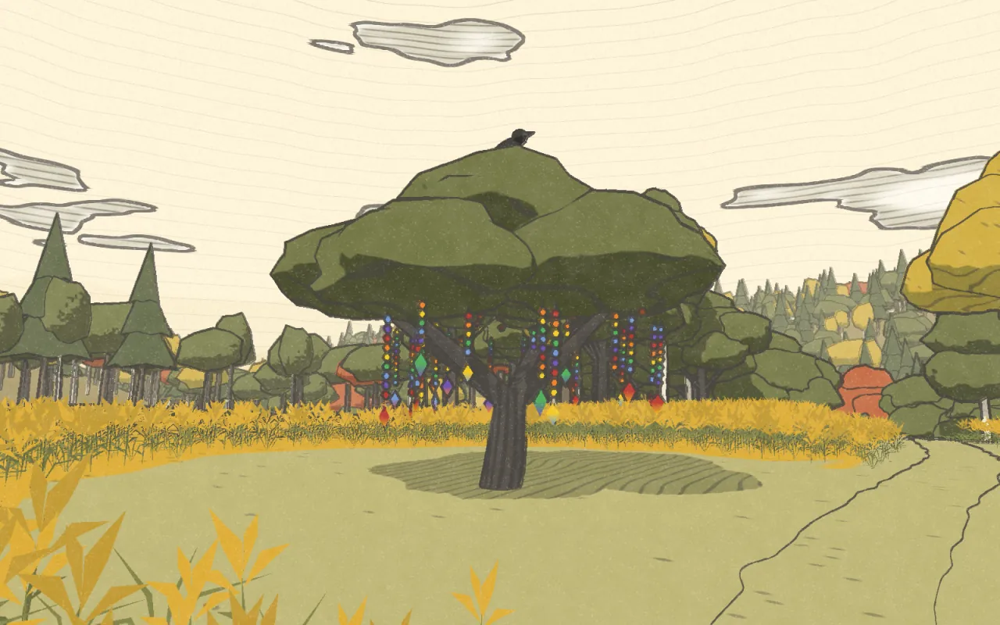
stop 3 of 8noon
Beaded by hand, one bead at a time. This is the shop that keeps the films going. The earrings don't really grow on the apple tree. We checked.


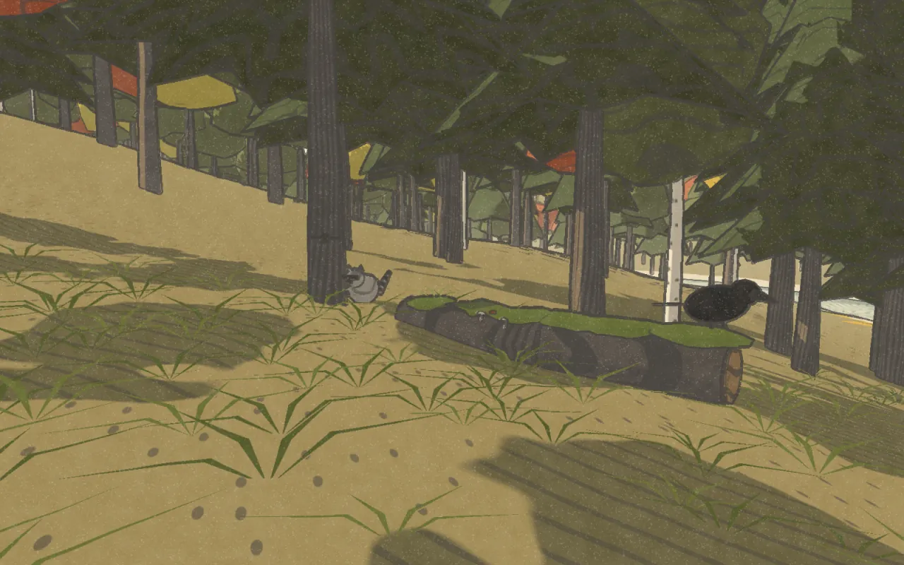
stop 4 of 8afternoon
Who lives here, and what we've found so far. We're not experts, so it's part guessing game. The trail cam got a raccoon on its first night.
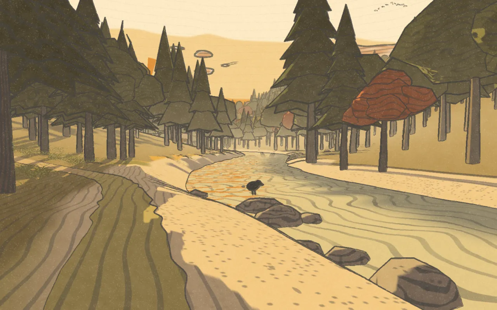
stop 5 of 8golden hour
34 acres in Central New York. Meadow, woods and a river, and a lot of figuring out. The plan is a homestead: a food forest, fruit trees, a garden and a lot of plants.
this walk is a made up version. the real map stays with us.


stop 7 of 8night
Sign up for the newsletter and we'll write when there's something worth saying. If you like what we make, you can buy us a coffee.

stop 8 of 8first light
When the cold comes we hitch up and head south. Winters we travel as Pneuma Nomads.
the same old cycle.
That's the loop. You're back where you started.
everything, the plain way
A documentary about our first year on 34 acres in Central New York. One season a year.
Meadow, woods and a river, and a lot of figuring out. The plan is a homestead: a food forest, fruit trees, a garden and a lot of plants.
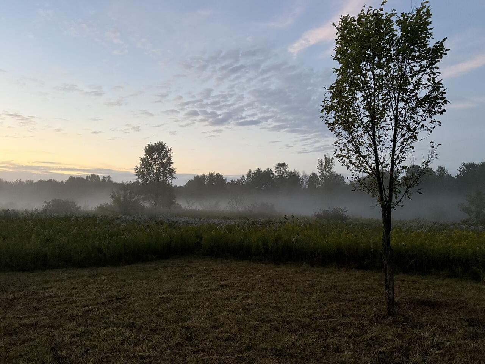
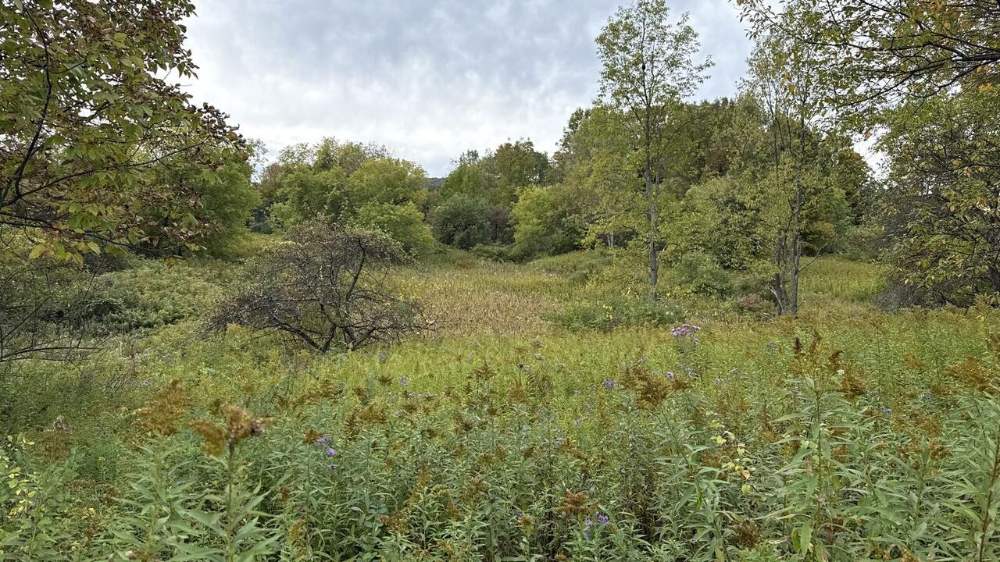
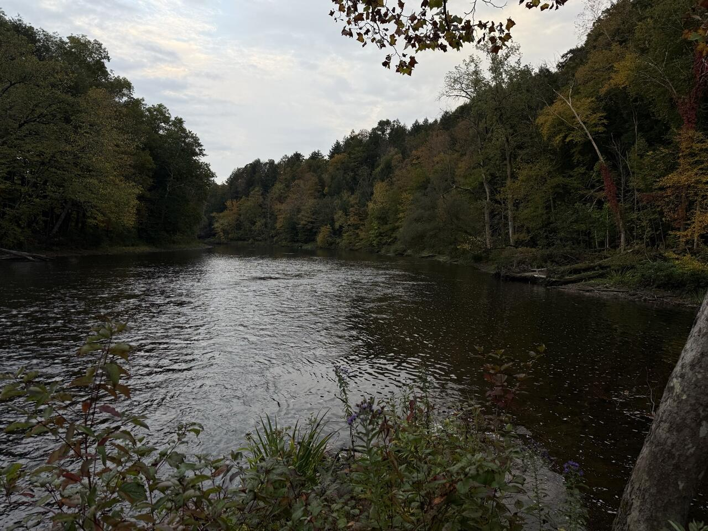
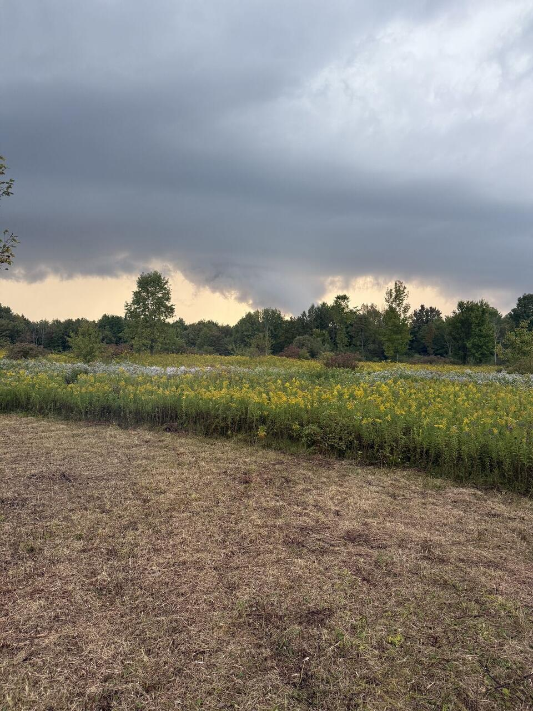
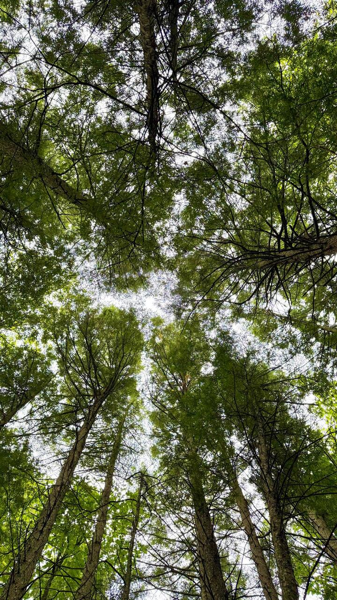
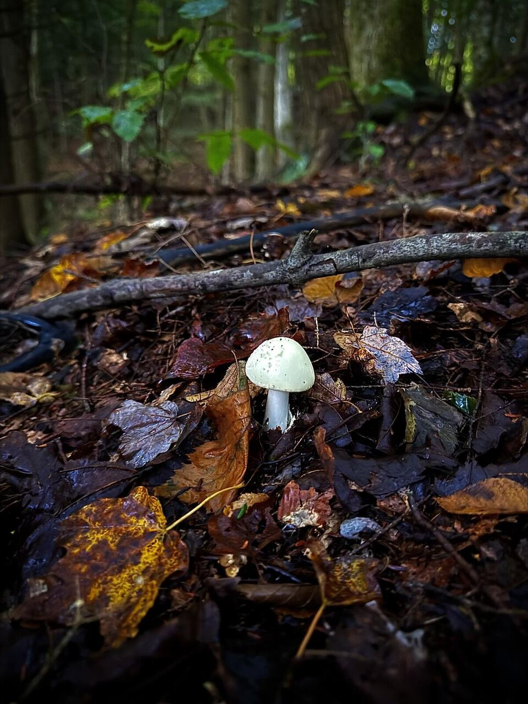
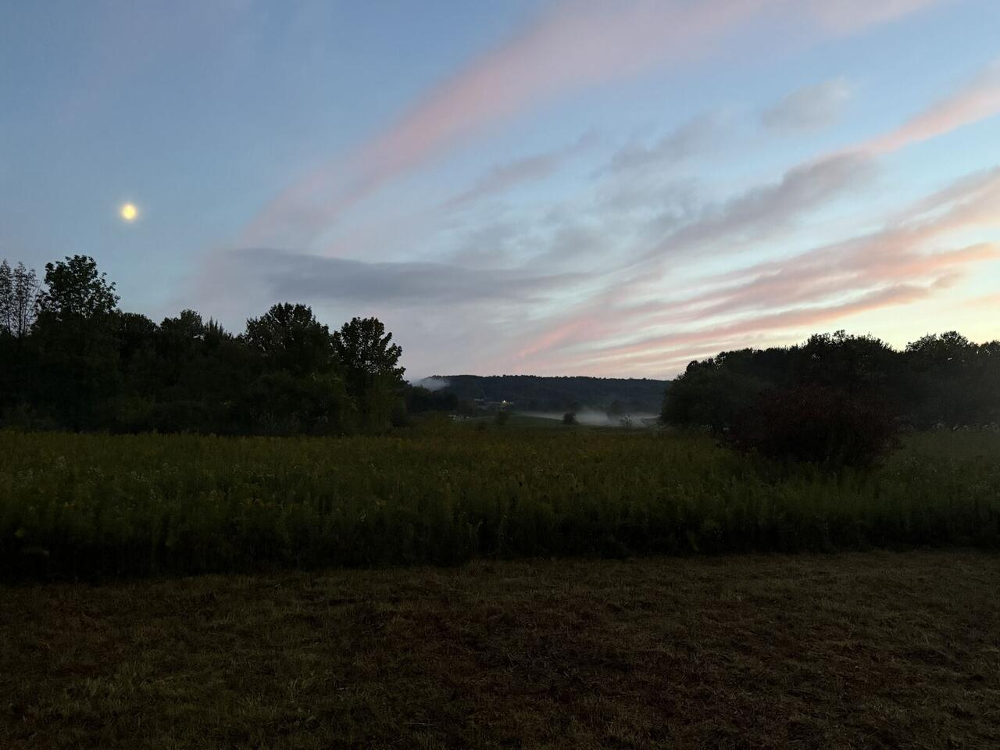
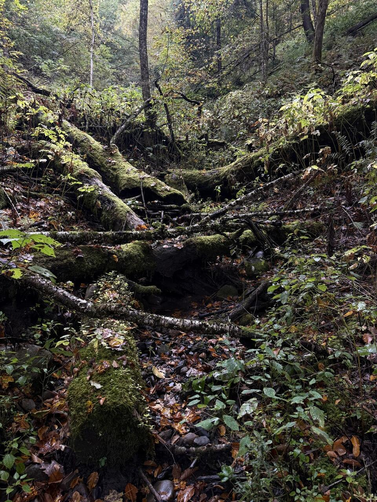
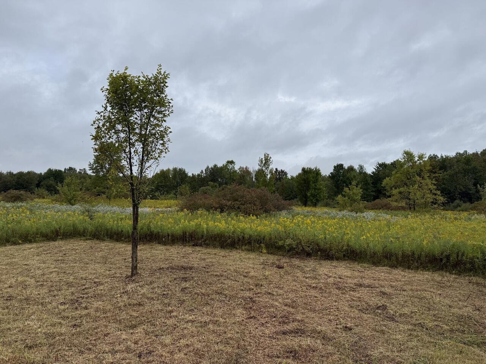
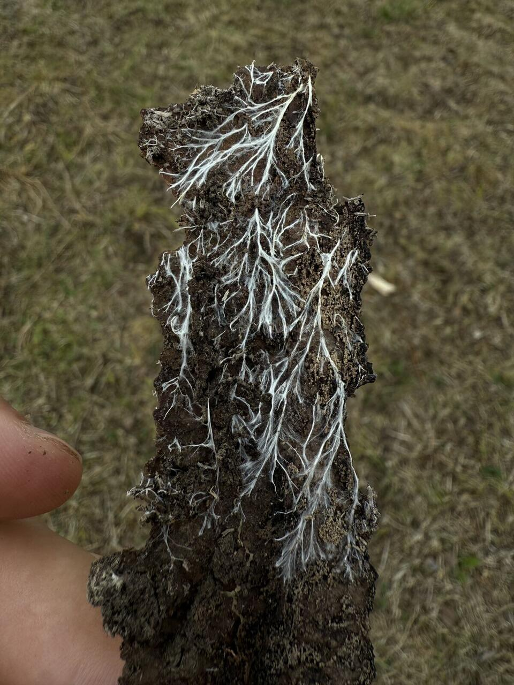
Beaded by hand, one bead at a time. This is the shop that keeps the films going.
Beadwork, food, and whatever else we're making at the time. When something turns out good, we share how we made it so you can try it too.
Brick stitch and bead loom patterns with every bead charted, a word chart you can tick off and the Toho colors listed. A few are free.
Nothing fancy, mostly made by feel.
tap a month. this is year one, so we're still learning what the land does.